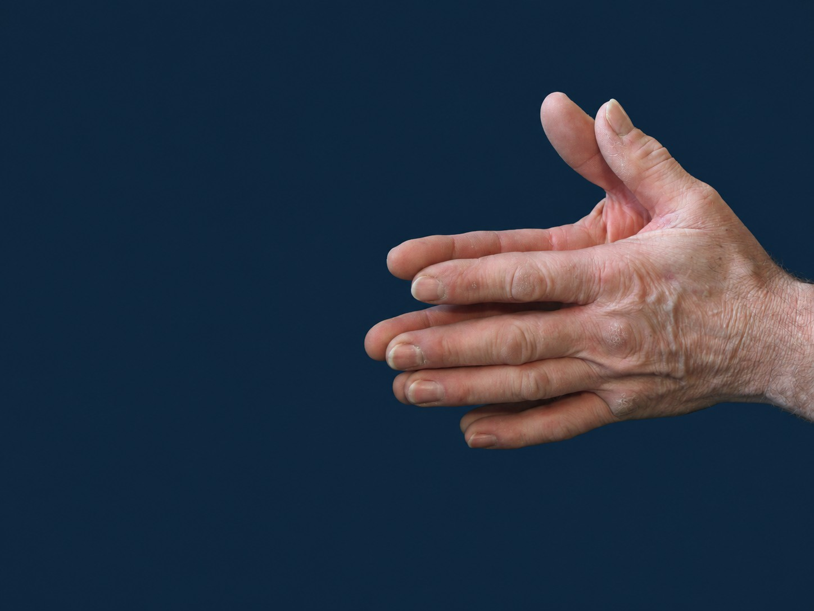

Craniosacral Therapy for you
From Liw’s hands.
Slow down, rebalance, and reconnect — to ease stress, reduce pain, and support wellness.
For you — craniosacral therapy
Full session · about 1 hour · $80 including HST
At Collaborative Health Group, Collingwood
The work
Quiet support for your body.
Liw’s goal is to support you and your body to find the internal quiet that lets you realize the full benefits of your body’s self-healing properties.
It is too easy to get caught up in the hustle of everyday life and function at less than our best — physically, mentally, and emotionally. Craniosacral Therapy can help you slow down, rebalance, and reconnect to the inner wisdom that deals better with stress, eases pain, and supports wellness.
If you are experiencing chronic tension, nervous system dysregulation, post-concussion symptoms, migraines, or persistent stress, CST may be a supportive addition to your care plan.
Please confirm current rates when you book.
About Liw
Systems thinking. Listening hands.
Liw (short for Liwana) Bringelson, PhD CST, has been an advocate — and client — of Craniosacral Therapy for many years, and a practitioner since 2008.
Her background includes human factors, ergonomics, social psychology, and engineering. She earned a PhD from Purdue University in Industrial Engineering and cognitive human factors, and later worked as university faculty in the US and Canada. Finding Quiet continues those objectives: an engineering problem-solving mind paired with an intuitive, listening approach to your body.
In December 2012, Liw completed her CST-techniques certification through the Upledger Institute. She has served as a Teaching Assistant for multiple Upledger courses (including CS I, CS II, SER I, and EcoSomatics Equine I) and is recognized as an Upledger Approved Craniosacral Therapy Study Group Leader.
From clients
What people notice.
Working with Liw has manifested profound changes in body alignment and freeing up of energy blockages, which has had a positive influence on my health and feeling of well-being. I have no reservations about recommending Liw’s pragmatic and empathic approach.
Cranial sacral sessions with Liw are a blessing. Liw connects with my energy, meeting me and my body where I am before moving forward. The rest of the session was both relaxing and energising. I am so grateful!
Ready to begin?
Book craniosacral therapy in Collingwood.
Sessions for you are at Collaborative Health Group. Equine bodywork and workshops are arranged by contacting Liw directly.